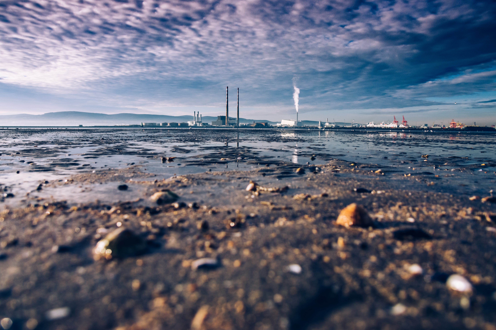

WATER POLLUTION

Water pollution is the contamination of water bodies (e.g.lakes,rivers, oceans,aquifers and groundwater).Water pollution occurs when pollutants are directly or indirectly discharged into water bodies without adequate treatment to remove harmful compounds.
Water pollution affects plants and organisms living in these bodies of water. In almost all cases the effect is damaging not only to individual species and populations, but also to the natural biological communities.
Causes of Water Pollution:
1. Illegal dumping of industrial waste.
2. Rainwater or snowmelt that runs over the land, picking up pesticides, and fertilizers; called runoff.
3. Used water from people's homes and communities; called wastewater.